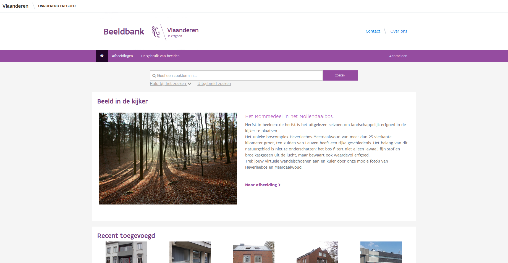
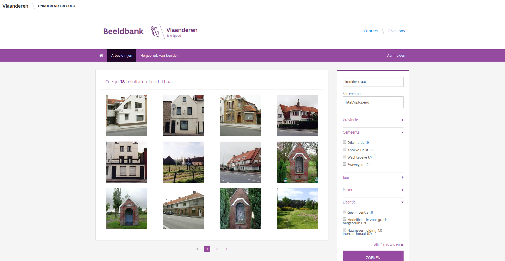
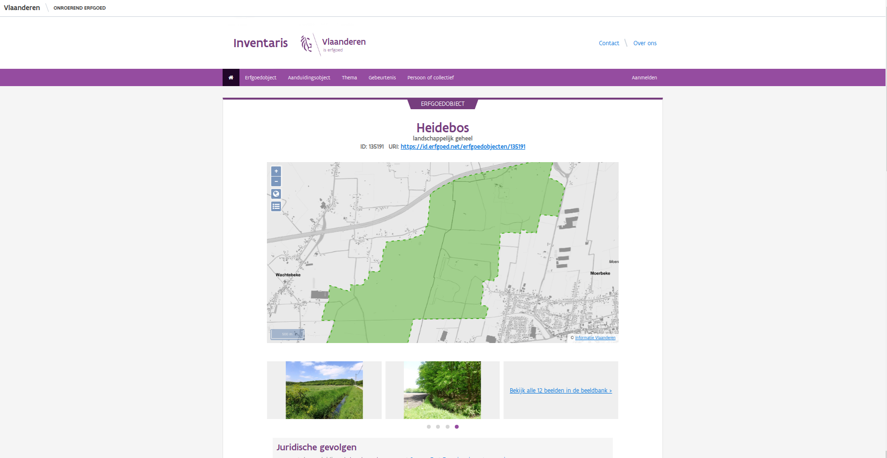
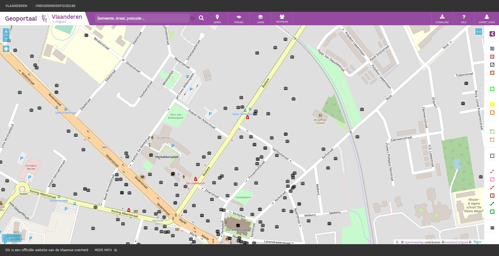

We hebben het de laatste tijd al vaak gehad over de nieuwe inventaris (Tien jaar inventaris), maar we hebben in 2019 ook een nieuwe beeldbank gelanceerd. Deze vervangt zowel een oude module die inherent was aan de inventaris als de beeldbank die ooit voor het VIOE ontwikkeld werd. De nieuwe beeldbank bevat ondertussen zo’n 277.000 afbeeldingen, waarvan een grote meerderheid vrij mag hergebruikt worden zolang de gebruiksvoorwaarden gevolgd worden. Vandaag geven we je wat meer uitleg bij de zoekfuncties van de beeldbank en hoe je er het meeste uit kan halen.
De homepagina van de beeldbank
Als je naar de homepagina van de beeldbank surft, dan zie je daar bovenaan een simpele zoekbalk. Deze helpt je om als een typische zoekmachine op basis van één of meerdere termen te zoeken. Je tikt er de termen in die je relevant acht en de toepassing doet zijn werk. Stel dat ik op zoek ben naar afbeeldingen over de Knokkestraat, dan tik ik Knokkestraat in en druk op zoeken. We krijgen 18 resultaten, gesorteerd volgens relevantie. Net zoals bij de inventaris (Full text zoeken in de inventaris) geeft de beeldbank ons de afbeeldingen gesorteerd volgens de mate waarin ze voldoen aan de zoekvraag. Het meest knokkestraat-achtige object staat vooraan. Dit zijn een aantal afbeeldingen van huizen in de Knokkestraat te Knokke-Heist, waarbij Knokkestraat zowel in de titel van de afbeelding als bij het adres staat. Daarna volgen afbeeldingen uit de Knokkestraat in Diksmuide, Zwevegem en tenslotte Wachtebeke. Bij die laatste is Knokkestraat wel aanwezig in de titel van het object, maar niet in het adres.
Afbeeldingen waarin de zoekterm knokkestraat voorkomt en enkele facetten
Op deze zoekpagina kunnen we het zoekresultaat ook verfijnen. Daarvoor gebruiken we zogenaamde facetten. Dit zijn filters die we kunnen instellen op de bestaande dataset. In dit geval kunnen we expliciet filteren op Provincie, Gemeente, Jaar, Maker en Licentie. Bij elk facet zie je alle mogelijke waarden, inclusief hoe vaak ze voorkomen. Zo zien we dat er 8 afbeeldingen uit Knokke-Heist zijn en maar 1 uit Diksmuide. Het laatste facet, licentie, geeft aan onder welke voorwaarden een afbeelding hergebruikt kan worden. Zo zien we dat 17 afbeeldingen vrij voor hergebruik zijn onder één van twee licenties en dat 1 afbeelding niet vrijgegeven is voor hergebruik.
De facetten spreken redelijk voor zich, het tekstveld vrij zoeken kan nog wel wat uiteg gebruiken. Net zoals bij de inventaris kan je hier full-text zoekoperatoren op toepassen:
Als je meerdere zoektermen opgeeft, dan combineer je die impliciet als EN. Dus, als je zoekt naar molen knokke, dan vraag je naar alle afbeeldingen waarin zowel de term molen als de term knokke voorkomt. Je kunt dit ook expliciet maken met de & (EN) operator. Dus, molen knokke en molen & knokke zijn exact hetzelfde.
Als je wil zoeken naar afbeeldingen waarin ofwel molen ofwel knokke voorkomen, dan gebruik je de | (OF) operator. Dus, molen | knokke. Dat zijn er natuurlijk heel wat meer.
Stel dat je een bepaalde zoekterm niet wenst te vinden, dan gebruik je de - (NIET) operator. Deze plaats je vlak voor de zoekterm die je niet wenst te zien. Dus, molen -knokke om alle molens waar Knokke niet in voorkomt te zoeken.
Indien je meerdere zoektermen als één zoektermen wenst te beschouwen, plaats je die tussen aanhalingstekens. Stel dat ik zoek naar van daele, dan krijg ik 7 afbeeldingen waarin zowel het woord van als het woord daele voorkomt. Stel dat ik echter afbeeldingen zoek van een fotograaf van daele, dan kan ik zoeken naar “van daele” om alles van deze fotograaf te zien.
Indien ik slechts op een deel van een woord wil zoeken, dan kan ik de wildcard * gebruiken. Let op, dit werkt enkel op het einde van een woord. Als ik bv. zoek naar roze*, dan krijg ik afbeeldingen waarin zowel rozendale, rozeveldstraat als rozebeekstraat of gewoon roze voorkomen. Zoals gezegd, werkt dit niet voor *roze of r*ze. Zo’n zoekopdracht zou namelijk onze systemen en dus ook jullie geduld veel te veel belasten.
Tenslotte kan je haakjes () gebruiken om zoekoperatoren te groeperen. Zo kan je met dorp* (knokke-heist | brugge) zoeken naar afbeeldingen waarin termen voorkomen die beginnen met dorp en waarin ofwel knokke-heist ofwel brugge voorkomen.
Denk er aan, als je met het algemene zoekveld zoekt, zoek je bepaalde woorden. Dat kan overeenkomen met iets als “een gemeente” of “een plaats”, maar kan evengoed iets anders opleveren. Als je bijvoorbeeld zoekt naar brugge*, kan je zowel afbeeldingen vinden die iets te maken hebben met bruggen, als afbeeldingen uit de gemeente brugge. Onze zoekmachine probeert standaard de afbeelding zo te rangschikken dat de afbeelding die het meest aan je vraag beantwoord, bovenaan staat. Bepalen welke afbeelding het beste antwoord is op je vraag is niet eenvoudig. In grote lijnen komt het er op neer dat een afbeelding waarin een zoekterm meerdere keren voorkomt als relevanter wordt gezien dan een afbeelding waarin de term maar 1 keer voorkomt. Daarnaast wordt een zoekterm in bepaalde velden als relevanter gezien dan in andere. Zo zal eenzelfde zoekterm meer wegen in het titelveld dan in een stukje van de locatie, wat op zijn beurt meer weer weegt dan de zoekterm in de beschrijving van de afbeelding. Wil je niet dat de toepassing de gevonden afbeeldingen slim sorteert? Dan pas je op de pagina met zoekresultaten het veld Sorteren op aan. Naast het hierboven beschreven sorteren op relevantie kan je ook sorteren op de titel of de datum van opname.
Je kunt zoekopdrachten met de full-text parameter perfect combineren met facetten. Dus als je zoekt naar brugge* en daarna kruis je het jaar 2019 aan, dan zie je alle afbeeldingen uit 2019 waarin een woord voorkomt dat begint met brugge.
Een erfgoedobject in de inventaris onroerend erfgoed met links naar de beeldbank
Naast het zoekformulier zijn er nog andere mogelijkheden om een afbeelding terug te vinden. De overgrote meerderheid van onze afbeeldingen zijn gekoppeld aan de inventaris onroerend erfgoed. Als je daarin een erfgoedobject opzoekt, dan zie je daar een aantal afbeeldingen. Dat zijn allemaal afbeeldingen uit de beeldbank. We tonen er altijd een aantal, en bieden je ook een link om alle afbeeldingen tegelijk te zien. Ofwel klik je op één enkele afbeelding om rechtstreeks naar die afbeelding te gaan. Ofwel klik je op de link naar alle afbeeldingen en kies je daar de individuele afbeeldingen die je interesseren.
De afbeeldingen uit de beeldbank bekijken op het geoportaal
Wie dat wil kan ook gebruik maken van ons geoportaal. Daar bestaat een optionele laag Beeldbank. Deze staat standaard uit, maar kan je aanvinken in het menu onder Lagen. Eens je deze aanzet, zie je overal op kaart camera icoontjes verschijnen, maar enkel als je ver genoeg ingezoomed bent op de kaart. Klik op een icoontje om alle afbeeldingen op die locatie te zien. Daarna kan je naar hartelust doorklikken naar de beeldbank om de afbeeldingen te downloaden. Wie regelmatig met GIS werkt kan deze laag ook downloaden en integreren in zijn eigen dagelijkse werking. In de attributen-tabel is steeds de URL opgenomen waar je alle formaten van de afbeelding kunt downloaden.
Zoals je ziet zijn er dus meerdere manieren om afbeeldingen terug te vinden in onze beeldbank. We hopen dat jullie hier dan ook naar hartelust gebruik van maken. Denk er alleen steeds aan dat je de licentievoorwaarden respecteert en iedereen correct erkent voor het geleverde werk. Mocht je nog vragen of suggesties over de beeldbank hebben, stel ze dan gerust